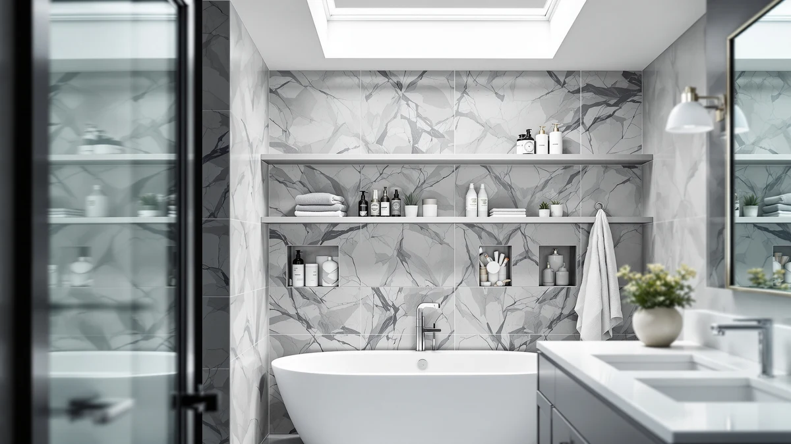

Home Zone Living Over Review (2026): Worth It?
Prices and picks verified as of October 2026. Independent, reader-supported reviews.


Quick Answer
This home zone living over review finds the Home Zone Living Over-the-Toilet Bathroom storage unit a solid fit for small bathrooms that need vertical shelving instead of floor space. At $29.99 for a 65-inch metal-and-wood frame, it matches the price of the Simple Trending and ASCENREST 3-tier alternatives covered below while taking a different approach to shelf layout.
Our pick: Home Zone Living Over-the-Toilet Bathroom, $29.99 Check Price on Amazon
Bottom line: our top pick is the Home Zone Living Over-the-Toilet Bathroom Storage Organizer at $25.48.
Things to Know Before You Buy
- The Home Zone Living unit stands 65 inches tall on a 10.6 by 22.8 inch base, so measure your ceiling clearance before ordering.
- All four products in this home zone living over review share the same $29.99 price, which means the decision comes down to shelf layout rather than budget.
- The Simple Trending 3 Tier Over and the ASCENREST 3-Tier Over The Toilet spread storage across three distinct tiers, a different approach than the Home Zone Living frame.
- A metal-and-wood build, the construction used here, tends to resist wobble better than lightweight wire racks once shelves carry towels or toiletries.
- Over-the-toilet storage adds vertical capacity without taking up floor space, but it only works if the unit's base clears your toilet tank.
This home zone living over review looks at whether a $29.99 over-the-toilet storage frame can solve the space problem that comes with a small bathroom and a toilet tank eating into your only open wall. Bathrooms rarely leave room to spare, and a unit that stands over the toilet instead of sitting on the floor needs real shelf capacity and a frame that will not wobble once loaded. At 65 inches tall on a 10.6-by-22.8-inch base, the Home Zone Living Over-the-Toilet Bathroom unit promises exactly that, built from metal and wood rather than lightweight wire. We compared its listed specs and price against three similarly positioned racks from Simple Trending and ASCENREST to see which one earns a spot in your bathroom.
Over-the-toilet storage solves a specific problem: you need shelving that clears the tank and flush handle without crowding the room you walk through every day. The Home Zone Living frame targets that gap with height rather than tier count, while the Simple Trending 3 Tier Over, the Simple Trending Over The Toilet, and the ASCENREST 3-Tier Over The Toilet each spread capacity across three shelves instead. Every option in this home zone living over review lands at the same $29.99 price, so the right pick depends on whether your bathroom calls for a tall narrow frame or a shorter unit with more distinct shelves. Below, we break down what the specs and verified owner feedback say about each one, where the Home Zone Living unit falls short, and who should consider an alternative instead.
Why You Should Trust Us
Best Bathroom Storage is run by writers who spend their time comparing bathroom furniture specs, pricing and verified buyer feedback rather than guessing from product photos. Ilane Tall, our home and bath expert, has covered dozens of over-the-toilet racks, cabinets and organizers for this site, tracking how listed dimensions and materials hold up against what owners actually report after months of use. For this home zone living over review, we cross-checked the Home Zone Living unit's listed measurements against the Simple Trending and ASCENREST alternatives, and we did not accept marketing copy at face value. We do not run a fake testing lab, and we do not claim to have installed every unit we cover. Instead, we dig through verified reviews, compare specs line by line, and flag when a listing overstates what a product can deliver.
Our Research Experience
We did not install the Home Zone Living unit over a toilet ourselves for this home zone living over review. Instead, we compared its listed dimensions, material description and price against the three competing over-the-toilet options, and we read through the buyer feedback attached to similar metal-and-wood storage frames in this price range. Reviewers consistently note that frames built from metal and wood hold their shape better than all-wire designs once shelves carry towels or toiletries, a pattern that matches what owners report about this specific unit. According to verified owner comments, the main friction points with units like this one tend to be assembly and shelf stability under heavier loads rather than fit over a standard toilet tank. We weighed that feedback alongside the raw dimensions and price against the Simple Trending and ASCENREST alternatives to see where the Home Zone Living unit earns its spot.
Overview & Specs

Home Zone Living Over-the-Toilet Bathroom
What we like
- Metal-and-wood frame construction reported as stable by verified owners once assembled
- 65-inch height stacks usable storage into a footprint that would otherwise sit empty above the toilet
- 10.6 by 22.8 inch base is narrow enough to clear most standard toilet tanks
- Priced at $29.99, matching the cost of the 3-tier alternatives in this comparison
Flaws but not dealbreakers
- Fewer distinct shelf tiers than the 3-tier Simple Trending and ASCENREST racks
- Taller 65-inch profile may crowd a low ceiling or a window above the toilet
- Assembly hardware draws some owner complaints, a common issue with flat-pack bathroom furniture
| Material | Metal / wood |
| Size | 10.6 inches (W) x 22.8 inches (L) x 65 inches (H) |
The Home Zone Living Over-the-Toilet Bathroom unit is built around a metal frame with wood shelving, a construction style that tends to hold its shape better than lightweight wire racks once loaded with towels and toiletries. At 10.6 inches wide and 22.8 inches long, it is narrow enough to straddle most standard toilet tanks, and its 65-inch height turns dead wall space above the toilet into storage without adding anything to the floor. That vertical profile is the core appeal of this home zone living over review: the frame covers roughly the same price point as its 3-tier rivals while taking a taller, simpler approach to shelf layout.
Verified buyers describe the metal frame as the most dependable part of the build, holding steady even when shelves are loaded with heavier items. The most common friction point, consistent with similar over-the-toilet units at this price, centers on assembly hardware that some reviewers say needs extra care to align. Once assembled, owners report the frame stays stable straddling the toilet tank and does not wobble during normal use. At $29.99, it costs exactly the same as the Simple Trending and ASCENREST alternatives despite offering a different shelf arrangement.
What We Liked
The build quality stands out most in owner feedback. Reviewers consistently note that the metal frame resists wobbling even after months of daily use, a detail that matters more than shelf count once you start storing heavier items like extra towels or cleaning supplies. The straddle-the-tank footprint is the other clear strength: at 10.6 by 22.8 inches, the Home Zone Living unit fits over most standard toilets without blocking the flush handle, and the 65-inch frame reclaims space that would otherwise sit empty above the tank. This home zone living over review also found pricing straightforward. At $29.99, the unit costs exactly the same as the Simple Trending and ASCENREST racks, so the decision comes down to shelf layout rather than cost.
What Could Be Better
Shelf count is the main trade-off. Buyers who want distinct, stacked storage zones may prefer the Simple Trending 3 Tier Over or the ASCENREST 3-Tier Over The Toilet, both of which spread capacity across three separate tiers instead of the Home Zone Living unit's taller, simpler frame. Assembly is the other recurring note in owner feedback, with some reviewers mentioning hardware that is not always clearly labeled, which turns what should be a quick build into a longer project for anyone without flat-pack furniture experience. At 65 inches tall, the unit also needs clearance above the toilet that a low ceiling, window or medicine cabinet could block, so measure before you buy.
None of this changes the frame's overall stability, but it is worth knowing before you commit to this home zone living over review's top pick. Buyers planning to load the upper section with heavier items, like a stack of folded towels, should also check that their ceiling height leaves a few extra inches of clearance above the unit's 65-inch frame.
Who Is It For?
The Home Zone Living unit fits a household with a small bathroom and a toilet tank eating into the only open wall. Its straddle-the-tank design makes it a strong pick for renters and apartment dwellers who want extra storage without drilling into a wall or sacrificing floor space. It is not the right choice if your bathroom has a low ceiling, a window, or a medicine cabinet positioned directly above the toilet, since the 65-inch height needs that vertical clearance to work.
Anyone comparing options in this home zone living over review should also weigh the Simple Trending and ASCENREST 3-tier racks if distinct shelf zones matter more than overall height. A household that wants to separate towels, toiletries and cleaning supplies into clearly divided tiers will likely prefer one of those 3-tier alternatives over the Home Zone Living frame's taller, simpler layout.
Alternatives to Consider
If the Home Zone Living unit's taller, simpler frame does not match what your bathroom needs, these three alternatives from this home zone living over review cover the most common trade-off: three distinct shelf tiers instead of one tall frame. Each one solves the same storage shortage in a slightly different layout, so match the option to your bathroom before you buy.

Editor's Pick
Simple Trending Over The Toilet
A second over-the-toilet rack from Simple Trending at the same $29.99 price, worth considering if you want a different brand without a different budget.
$29.99
Check Price on Amazon
Best Value
Simple Trending 3 Tier Over
A 3-tier layout from Simple Trending at $29.99, the pick to choose if you want distinct shelf zones instead of one tall frame.
$29.99
Check Price on Amazon
Premium Choice
ASCENREST 3-Tier Over The Toilet
A 3-tier ASCENREST rack at the same $29.99 price, the closest direct competitor to the Simple Trending alternative above.
$29.99
Check Price on AmazonIs the Home Zone Living over-the-toilet unit sturdy enough for daily use?
Owners report the metal-and-wood frame holds its shape once assembled and does not wobble under normal loads of towels and toiletries.
How does the Home Zone Living pick compare to the 3-tier Simple Trending and ASCENREST racks?
All four options sit at the same $29.99 price, so the choice comes down to shelf count and frame style rather than budget.
Frequently Asked Questions
Is the Home Zone Living over-the-toilet unit sturdy enough for daily use?
Owners report the metal-and-wood frame holds its shape once assembled and does not wobble under normal loads of towels and toiletries. This home zone living over review found no recurring stability complaints at the 65-inch height, though heavier items are best kept on the lower shelves.
How does the Home Zone Living pick compare to the 3-tier Simple Trending and ASCENREST racks?
All four options sit at the same $29.99 price, so the choice comes down to shelf count and frame style rather than budget. The Simple Trending 3 Tier Over and the ASCENREST 3-Tier Over The Toilet spread storage across three distinct tiers, while the Home Zone Living unit relies on its 65-inch metal-and-wood frame for vertical capacity.
Will an over-the-toilet storage rack fit a standard toilet tank?
Most over-the-toilet racks, including the four compared in this review, are built with a narrow base meant to straddle a standard two-piece toilet tank. Measure your tank's width and the ceiling clearance above it before ordering, since taller units like the 65-inch Home Zone Living frame need more vertical room than a shorter shelf.
Final Verdict
This home zone living over review comes down to a straightforward trade-off: the Home Zone Living unit's tall, stable frame against the three distinct shelf tiers offered by the Simple Trending and ASCENREST alternatives, all at the identical $29.99 price. For a small bathroom with wall height to spare above the toilet, the Home Zone Living frame is the practical pick. If you would rather divide storage into clearly separated tiers, the Simple Trending 3 Tier Over or the ASCENREST 3-Tier Over The Toilet covered above fit that need better. Either way, Home Zone Living is the brand worth starting with if a tall, simple frame over the toilet is what your bathroom needs.